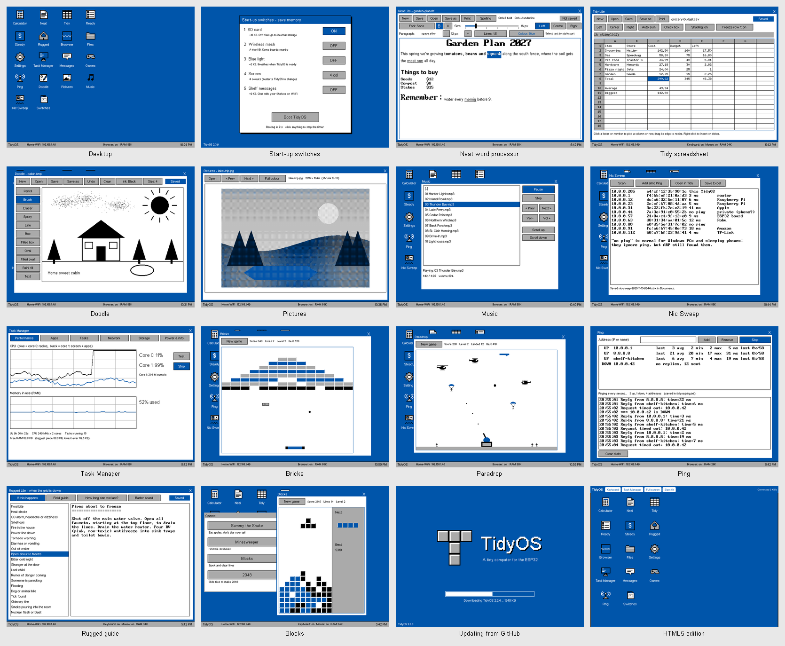
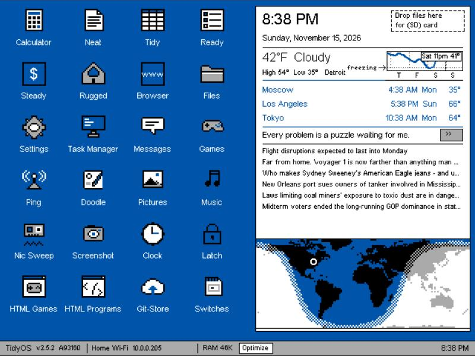
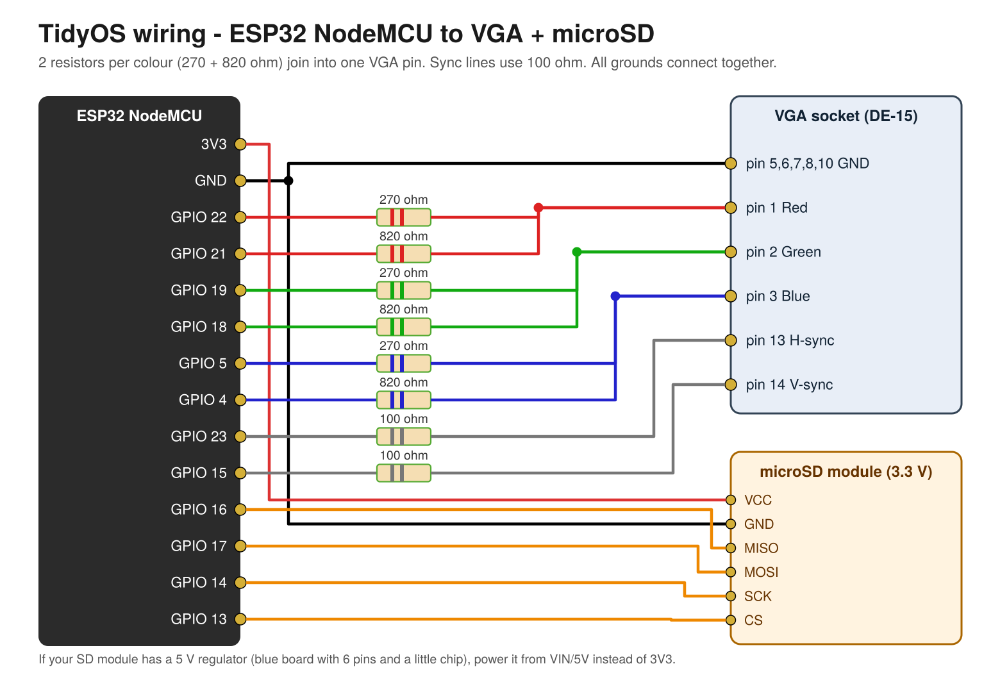

1. Install
Pick where the screen goes:
Note: the VGA edition is frozen at version 2.6.8 and no longer updated. New features go into the HTML5 edition.
VGA edition: the desktop shows on a VGA monitor wired to the board with resistors. Use a Bluetooth LE keyboard and mouse.
HTML5 edition: no monitor or resistors needed. The desktop shows in a web browser on any phone, tablet or PC on your Wi-Fi, and that browser is the keyboard and mouse. Bluetooth is off to leave more memory for apps.
Plug your NodeMCU ESP32 into this computer with USB, then click the button. Works in Chrome or Edge on a computer.
Need this every time? A 10 µF capacitor from EN to GND usually fixes the board's automatic install mode for good (+ side to EN).
From 1.8 on you can also update inside TidyOS: Settings → Check for updates (needs the SD card).
Updating? When the installer asks, leave Erase device unticked: your Wi-Fi and settings stay. Tick it for a fresh start, or when switching between VGA and HTML5.
Copy files over USB
Put music, pictures, games and documents on the board's SD card or its internal flash through the USB cable. No Wi-Fi needed. The board must be running TidyOS 2.7.3 or newer.
The internal flash is small (about 550 KB), so it fits a few short songs at most. Music goes best in the SD card's Music folder, where the Music app looks first. Copying runs at up to about 50 KB a second, so a 4 MB song takes a couple of minutes.
Your browser can't talk to USB devices. Please use Chrome or Edge on a computer.
What it looks like


A real screenshot of TidyOS 2.5.2 in the browser. More in the README.
Drawn previews made from TidyOS's own layouts, colours and fonts. Real screenshots are in the README.
2. Wire it
Nothing to wire for the screen. A microSD module is still recommended for your files. Without one, TidyOS uses the board's internal flash. Either wiring works; TidyOS finds the card on its own:
| Wiring | MISO | CLK | MOSI | CS | Power |
|---|---|---|---|---|---|
| In-line (module plugged straight onto GND · 19 · 18 · 5 · 17, same as The Shelf) | 19 | 18 | 5 | 17 | 3v3 pin bent up, one jumper to 3V3 |
| Classic | 16 | 14 | 17 | 13 | 3V3 and GND |
The HTML5 edition doesn't drive any VGA pins, which is what frees 19, 18 and 5 for the in-line wiring. Task Manager → Storage shows which wiring it found.
2. Wire it

| ESP32 | Through | To |
|---|---|---|
| GPIO 22 / GPIO 21 | 270 Ω / 820 Ω | VGA pin 1 (red) |
| GPIO 19 / GPIO 18 | 270 Ω / 820 Ω | VGA pin 2 (green) |
| GPIO 5 / GPIO 4 | 270 Ω / 820 Ω | VGA pin 3 (blue) |
| GPIO 23 | 100 Ω | VGA pin 13 (H-sync) |
| GPIO 15 | 100 Ω | VGA pin 14 (V-sync) |
| GND | – | VGA pins 5, 6, 7, 8, 10 and SD GND |
| GPIO 16 / 17 / 14 / 13 | – | SD MISO / MOSI / SCK / CS (the in-line wiring is HTML5 only: 19, 18, 5 are VGA pins) |
| 3V3 (VIN for 5 V modules) | – | SD VCC |
3. First start
- Power the board. On a phone or PC, join the Wi-Fi hotspot named after the board, TidyOS-xxxxxx (e.g.
TidyOS-A93160; passwordtidyos123). Each board has its own, so several can be set up side by side. (Before 2.6.3 it was called TidyOS-Setup.) - The desktop pops up, or open http://10.1.1.250.
- Open Settings, find your home Wi-Fi, type the password, then Connect and Save.
- Rejoin your home Wi-Fi and open the address shown at the bottom of the desktop, or http://tidyos-xxxxxx.local (the board ID in small letters).
On a phone, tap Keyboard in the top bar to type. Task Manager and Full screen are up there too. One browser at a time: opening TidyOS somewhere else takes over. If it can't join your Wi-Fi it opens its TidyOS-xxxxxx hotspot again, and turns it off once it's on your home Wi-Fi, unless Settings → Run TidyOS Hotspot is on: then TidyOS leaves your Wi-Fi and runs only its own network (no internet meanwhile).
Updating: the start-up screen has an Update button, or use this page with Erase device unticked. The bottom bar shows the version and the board's ID.
3. First start
- Put your Bluetooth keyboard in pairing mode. TidyOS connects to it automatically.
- Then put your Bluetooth mouse in pairing mode.
- Open Settings, find your Wi-Fi, type the password, then Connect and Save.
Bluetooth LE keyboards and mice only. With no Bluetooth device you can type in a serial monitor at 115200.
Logging in: addresses
| Where you are | Join this Wi-Fi | Open in the browser |
|---|---|---|
| TidyOS hotspot (first start, when it can't join your Wi-Fi, or with Settings → Run TidyOS Hotspot on) | TidyOS-xxxxxx (the board ID, e.g. TidyOS-A93160) password tidyos123 | http://10.1.1.250 (the desktop usually pops up by itself) |
| Home Wi-Fi (after Settings → Connect → Save) | your own Wi-Fi | the address shown on TidyOS's bottom bar, e.g. http://10.0.0.205 or http://192.168.1.40or http://tidyos-xxxxxx.local: your board's ID from the bottom bar in small letters, e.g. http://tidyos-a93160.local (most PCs, iPhones and Macs). Every board has its own name, so several can share one Wi-Fi |
| File sharing (Settings → Share the SD card) | same as above | the same address with :8081, e.g. http://10.0.0.205:8081, http://10.1.1.250:8081 or http://tidyos-a93160.local:8081 |
| File sharing (Settings → Share the SD card) | your own Wi-Fi | the address shown on TidyOS's bottom bar, e.g. http://192.168.1.40, or http://tidyos-xxxxxx.local (its ID in small letters) |
Can't find the address? It's on the bottom bar of the TidyOS desktop, in Task Manager → Network, or type !status in a serial monitor at 115200. Your router may hand out a different address after a restart; a DHCP reservation for the board keeps it the same. One browser at a time can show the HTML5 desktop.
Apps
Calculator · Neat Lite (writing, spell check) · Tidy Lite (spreadsheet) · Ready Lite (to-do) · Steady Lite (bills) · Rugged Lite (grid-down guide) · Messages (The Shelf + Coms mesh) · Browser · Files · Settings · Task Manager
Printing: network printers (found automatically), through a Pi with CUPS, or Save as PDF.
Wi-Fi file sharing: one switch, then copy files to and from the SD card from any browser (port 8081 in the HTML5 edition).
Also: Doodle · Pictures · Music (MP3 + MIDI, shuffle) · Nic Sweep · Screenshot · Clock (alarm, stopwatch, world time) · Latch password safe · Git-Store cloud folder · HTML Games (SD:/games) · HTML Programs (SD:/programs) · Ping · Switches
Games: Sammy the Snake (with music) · Minesweeper · Blocks · 2048 · Bricks · Paradrop · Deep Drill · Missile Command · StuntCopter, each with a Pause button
Desktop: weather in °F with a 4-day graph (point at it for each hour), world times with temperatures, affirmations, news headlines, a day/night world map, and a drop box for copying files to the SD card. Windows minimize to the bottom bar, which also has an Optimize button next to RAM.
For better web pages, run helper/tidyos_proxy.py on a Raspberry Pi and enter its address in Settings → Browser.
See the README for everything else.